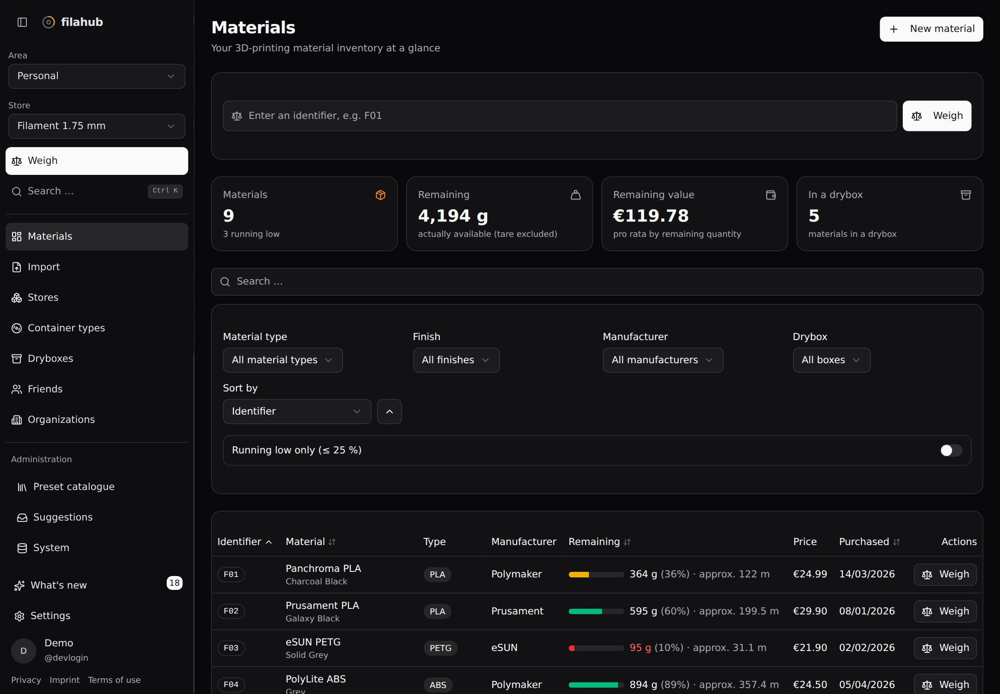
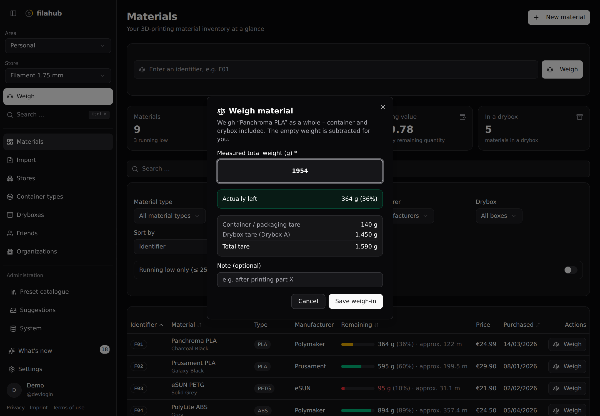
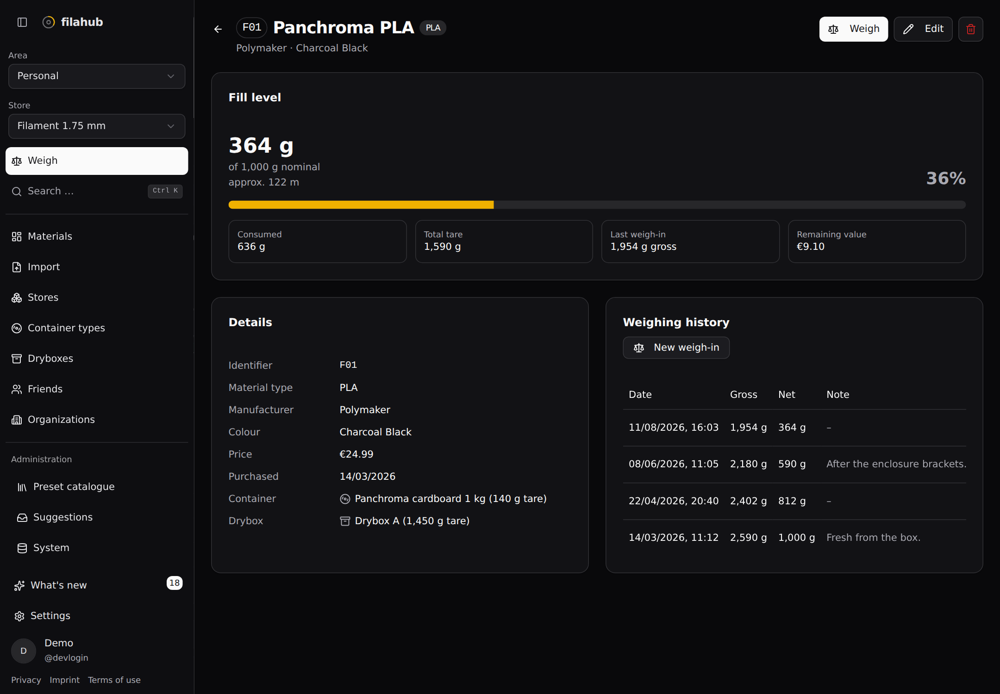
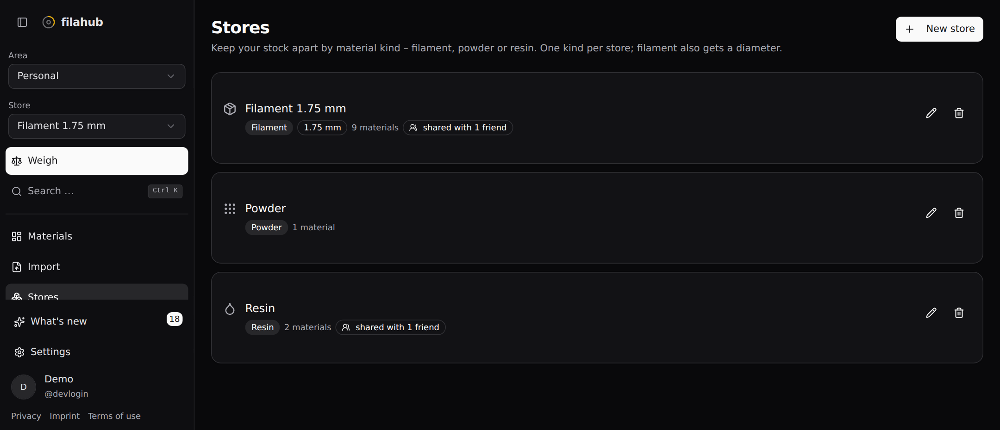
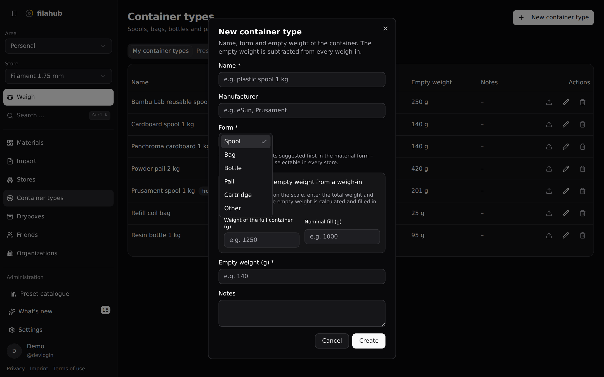
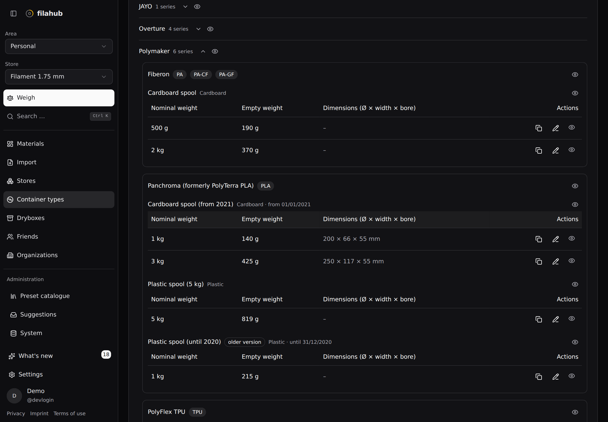
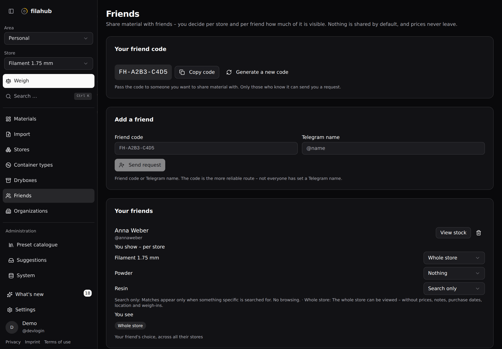
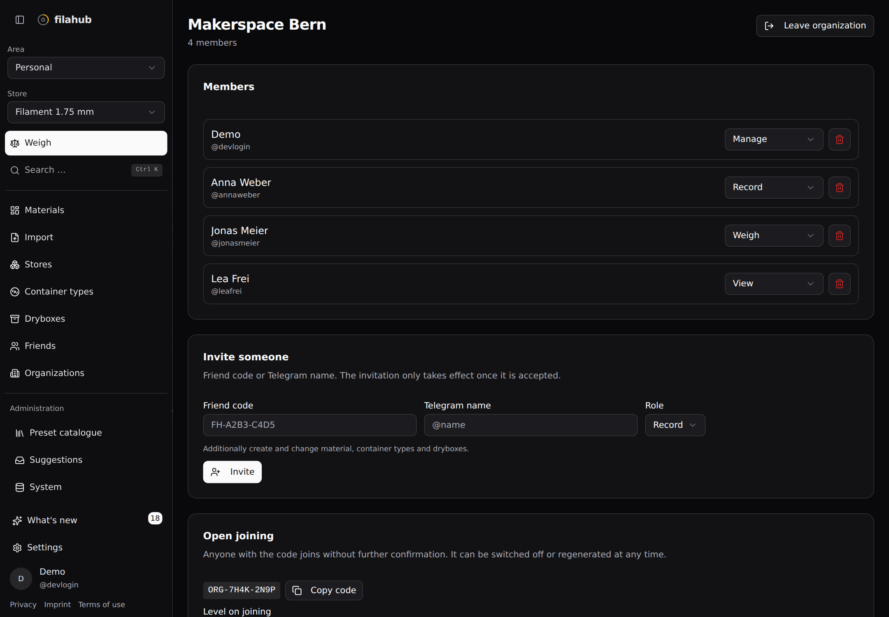
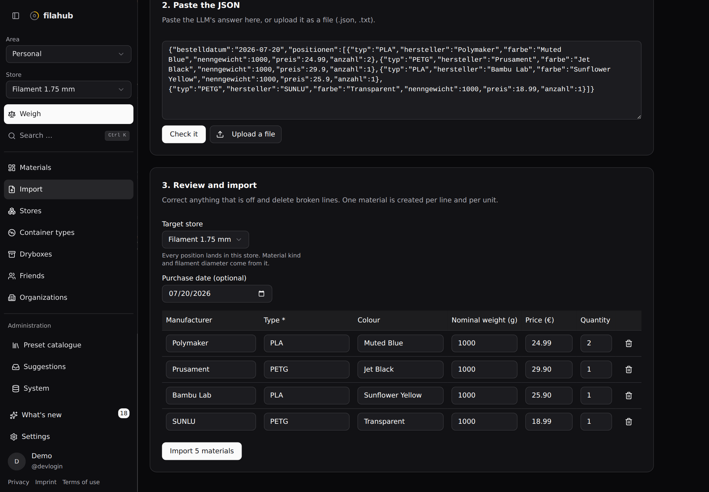
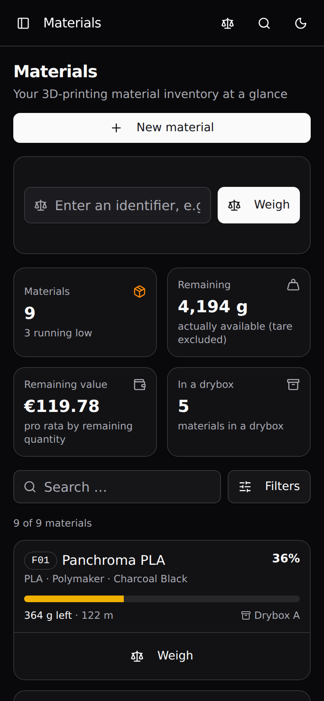

Self-hosted · material inventory
How much is actually left?
Put it on a kitchen scale and type in what the scale says. filahub subtracts the empty weight of the container and of the drybox it lives in, and keeps the result — for every spool, bottle and pail, every time.

Weighing
The empty weight is the whole problem
A spool that reads 1,590 g on the scale might be empty or might hold half a kilo — it depends entirely on what the spool and the box underneath it weigh. So filahub stores those two numbers as data and does the subtraction for you:
remaining = gross − container tare − drybox tare
Nothing is derived from slicer estimates or print jobs. The remaining quantity is whatever the last weigh-in said, so it is wrong only if the scale was.
Give a material a short identifier — F01 — and write
it on the label. Typing it into the box at the top of the overview
opens the weigh-in dialog on that one. The field searches every
store, because whoever reads a code off a spool in their hand has
no idea which store happens to be selected. Standing at the
printer, the whole loop is: scale, F01, number, done.
The fill level is coloured on one scale throughout:
- 10% and under
- to 25%
- to 50%
- above

Every weigh-in is kept, not overwritten. A material's page lists them with gross and net side by side, which is what turns an inventory into a consumption record: 1,000 g in March, 812 g in April, 590 g in June, 364 g in August.

Stores
Not everything you print comes on a spool
If you sinter powder or print with resin, it needs somewhere to live. A store groups what belongs together and carries the settings that apply to everything inside it — which kind of material it holds, and for filament, which diameter:
- Filament
- Spools and reels. Remaining amount also in metres.
- Powder
- Sintering powder in bags or buckets. Grams only.
- Resin
- Liquid resin. Remaining amount also in litres.
Up to five of them, switched in the sidebar; the overview, the statistics and the filters all follow that choice. The diameter belongs to the store rather than to each material, because it changes the answer more than anything else does: 1 kg of PLA is about 335 m at 1.75 mm, and only about 126 m at 2.85 mm.
Grams are still what you weigh and what you type in. But next to
the remaining amount you also see roughly how much is left in the
unit that matters — and it is prefixed with
approx. on purpose. The number rests on a density
that is usually an estimate, and filahub would rather say so than
pretend. Powder gets no second unit at all: bulk density depends
on grain size and packing, so any figure would be a guess, and a
wrong number is worse than none.

Containers
A container is not always a spool
What holds your material is a container, and every container type has a form: spool, bag, bottle, pail, cartridge — or other, because not every container in the world fits five boxes.
The form is a hint, not a rule. In a resin store, bottles and cartridges sort to the top under a heading that says “Fits Resin”, but every container stays selectable. If you have a reason to put filament in a bucket, filahub is not going to argue.

An empty weight is a fact, so it is shared
Weighing an empty Prusament spool is a job exactly one person should ever have to do. filahub ships a catalogue that everyone on an instance draws from, with four levels:
manufacturer → series → version → size
The version level is the one that earns its keep. Polymaker moved its PLA from a 215 g plastic spool to a 140 g cardboard one, and both are in the catalogue with the period each was sold in. Pick the wrong one and every weigh-in on that spool is off by 75 g — quietly, forever.
A size carries the empty weight and, where it is known, outer diameter, width and bore. Those three only show up for spools; a bottle has no bore.

Hide any manufacturer, series, version or single size you will never own. Hiding changes only your own picker — a container already assigned to a material stays valid and keeps its tare. You can also copy a preset into your own, freely editable container type when yours differs from the catalogue.
Found a wrong number? Send a correction, with the reason you know better. Suggestions go into a moderation queue; an accepted one is applied to the catalogue and becomes visible to everyone, and a rejected one comes back with the reason. That is also how resin and powder entries will arrive. None ship with the app, and that is deliberate: a wrong starting value is worse than a missing one.
Sharing
Friends see what you choose, store by store
You have 200 g of PETG left, you need 600, and someone you know
has a full spool sitting in a drybox. Swap friend codes —
something like FH-A2B3-C4D5 — and you can see it.
Nobody can find you without the code, so your account cannot be
discovered by guessing names.
What you show is decided per store and per friend, and nothing is shared by default:
- Nothing
- The store stays completely hidden. This is where every friendship starts.
- Search only
- Your material turns up when your friend searches for something specific. No browsing.
- Whole store
- Your friend can open that store and look through it.
Prices never leave. Neither do notes, purchase dates, dryboxes, weigh-in history, or the store's own name — a store name is free text and can name a place. What a friend gets is one plain list, so they cannot tell whether two matches came from one store or two, or that you keep separate stores at all. Found something useful? “Ask” sends a message through the bot.

An organization is one stock, several people
A company, a university print hub or a makerspace has one shelf of filament and a dozen people reaching into it. Create an organization, give it stores, and everyone you let in works on the same stock — not a copy, not a shared view, the stock itself. A switcher above the store switcher decides which side you are looking at, and nothing mixes: your personal stock stays exactly as private as it was.
Not everyone in a workshop should be able to delete a store, so membership comes at one of four levels, each including the ones below it:
- View
- Look up and search the stock.
- Weigh
- Also weigh — the everyday act of booking material out again.
- Record
- Also add, change and import material, and maintain containers and dryboxes.
- Manage
- Also create stores, invite people and assign levels.
Buttons you are not allowed to use are not shown, rather than
shown greyed out. There are two ways in: a join code —
ORG-… — that anyone can enter, and which can never
hand out “Manage”, because a code gets passed around and pinned to
a wall and whoever found it should not end up running the place;
or a personal invitation at whichever level you pick, which takes
effect only once the invited person accepts.

Bulk import
A whole order in one pass
filahub generates a prompt. Hand it to an LLM together with your order confirmation, paste the JSON that comes back, and you get an editable table — manufacturer, type, colour, nominal weight, price, quantity. Correct what the model got wrong, drop the lines you do not want, pick the store it all goes into, and only then does anything get written.
A line with quantity 2 becomes two separate materials, because two spools are two spools and they will not be weighed together.
The JSON keys stay German — typ,
hersteller, nenngewicht — whichever
language the interface is set to. They are part of the schema the
server validates against, so translating them would break the
import.
An order confirmation usually carries your name, your address and how you paid. That goes to the model's provider, not to filahub, so redact whatever it does not need — the page says as much where you paste.

Self-hosting
Runs on your own server
One container from
ghcr.io/grimbixcode/filahub and a PostgreSQL
database. Pending migrations are applied at startup, so an empty
database sets itself up and an update is a pull and a restart.
Sign-in goes through Telegram — either the official login widget or a six-digit code from your own bot — with a whitelist of user IDs. Open registration exists but is off unless you set it, because the moment someone else signs in you are the data controller for their data, and nobody should end up there by overlooking a variable.
The interface is available in English and German, and the language belongs to the account rather than the browser. Number, weight and date formats are a separate setting — an English interface does not force you into American dates.
Environment variables, a ready-to-use Compose file and the reverse-proxy setup are in the README; what the app stores and what running it for other people means is in PRIVACY.md. It is free software under the AGPL-3.0, so a fork you host yourself stays yours — you just have to pass the source on to whoever uses it.
